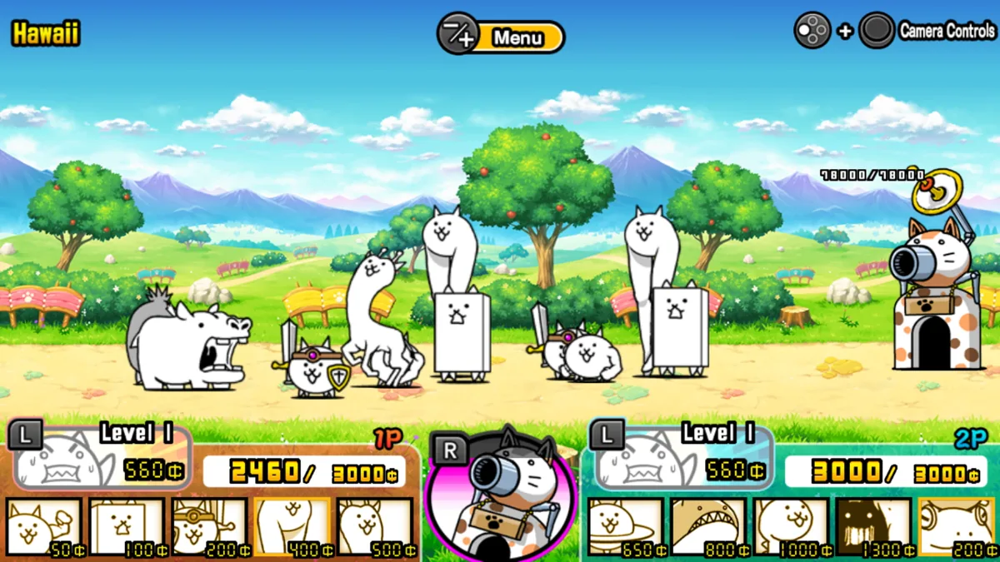
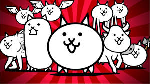
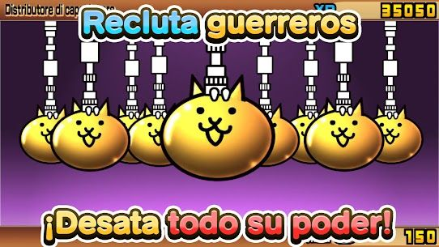

¿Que es The Battle Cats?
The Battle Cats es un videojuego de defensa de torres gratuito desarrollado y publicado por PONOS Corporation para iOS y Android , lanzado originalmente en Japón bajo el nombre de Nyanko Great War (にゃんこ大戦争, Nyanko Dai Sensō ) . The Battle Cats debutó en la App Store japonesa de iOS en noviembre de 2012 bajo el nombre de Battle Cats , con soporte para Android en diciembre de ese mismo año, y se hizo popular tanto en Japón como en Corea. Más tarde se eliminó de lastiendas Google Play y App Store de EE. UU. , Con una versión mejorada lanzada el 17 de septiembre de 2014. [ 3 ] Se lanzó un puerto para Microsoft Windows en agosto de 2017, y estuvo disponible para descargar hasta fines de 2018, cuando PONOS Corporation finalizó el soporte para él. Fue portado a Nintendo 3DS en 2016 y Nintendo Switch en Japón en 2018 y el sudeste asiático en 2021.
Trama
La trama de The Battle Cats se desarrolla a lo largo de cuatro sagas principales, tres sagas de subcapítulos en las Etapas de Leyendas y varias etapas misceláneas. Los diálogos en forma de texto que se desplaza antes y después de completar los Capítulos, las descripciones de las unidades y los enemigos y las batallas durante el juego proporcionan la mayor parte de la historia y la tradición del juego.
Capitulos de la Historia
En total, hay cuatro sagas en la historia principal, cada una de las cuales contiene tres capítulos, a excepción de "The Aku Realms", que solo tiene un capítulo. Hay diez capítulos en total, pero en las tres primeras sagas, cada capítulo es esencialmente una nueva versión del anterior. Contienen los mismos niveles, temática y tesoros en los tres capítulos, con la única diferencia de la cantidad, dificultad y selección de enemigos que aparecen en los niveles. Además, el diálogo de apertura y final de cada saga se reutiliza en todas ellas.
Jugabilidad
Battle Cats es un juego de defensa de torres en el que el jugador selecciona un equipo de "Gatos" desbloqueables y los envía a un campo de batalla en 2D para defender la Base de los Gatos y derrotar a la base enemiga. Estos enemigos pueden tener rasgos como "Rojo", "Flotante", "Negro", "Metal", "Ángel", "Alienígena", "Zombie", "Aku", "Reliquia" o "Sin rasgos". Para ganar la batalla, el jugador debe desplegar diferentes tipos de Gatos y usar sus habilidades únicas a su favor.
En la batalla, cada unidad enemiga y cada gato tiene diferentes estadísticas y habilidades, lo que les da a las unidades diferentes roles en el campo de batalla, como ser un escudo de carne , un controlador de masas o un francotirador. Junto con las estadísticas básicas, una unidad también puede tener habilidades, que pueden mejorar su rendimiento contra un tipo específico de enemigo o les da una habilidad única que puede ayudarlos en la batalla. Por ejemplo, el gato "Axe Cat" es fuerte contra el tipo de enemigo "Rojo", lo que significa que inflige más y recibe menos daño contra los enemigos "Rojos".
Los Gatos son los protagonistas que el jugador despliega a lo largo del juego. Muchos Gatos no se parecen a los gatos típicos, y a veces están equipados con objetos externos como armas o máquinas, o son personajes ganados a través de eventos de colaboración. Un jugador puede gastar XP y "Cateyes", recursos obtenidos al completar niveles, para mejorar un Gato, así como NP (Puntos Nyanko) para obtener y mejorar Talentos, que otorgan habilidades adicionales. La versión 12.1 agregó Ultra Talentos, lo que permite que ciertos Gatos Uber Raros desbloqueen de uno a tres Talentos adicionales y equipen un segundo Orbe de Talento después de alcanzar el nivel 60. Los Gatos tienen topes de nivel , o niveles máximos, que difieren entre las unidades de Gato, que van desde tan alto como 60 hasta tan bajo como 20. Algunos Gatos pueden evolucionar a una Forma Verdadera después de subir de nivel a su forma evolucionada, lo que requiere Catfruit o Semillas de Catfruit; estas se obtienen de etapas especiales o de la fusión de Semillas en Fruta. Algunos gatos requieren Behemoth Stones o Behemoth Gems para alcanzar su forma verdadera, que se obtienen de las etapas de Behemoth Culling. La actualización 13.0 agrega la capacidad de algunos gatos Uber Rare para evolucionar a Ultra Forms después de alcanzar el nivel 60, después de gastar Behemoth Stones o Gems, Catfruit y XP. Los duplicados obtenidos en [ 6 ] los sistemas Gacha del juego se pueden usar para agregar "niveles plus" adicionales a una unidad Cat. [ 7 ] Los gatos se dividen en seis rarezas, que están en rareza creciente: [ 8 ] Normal, Especial, Raro, Súper Raro, Uber Súper Raro (comúnmente abreviado como Uber Raro o simplemente Uber) y Leyenda Raro.Battle Cats contiene tres historias principales: Empire of Cats (EoC), Into the Future (ItF) y Cats of the Cosmos (CotC), [ 9 ] y cada historia contiene tres capítulos y una historia adicional, Aku Realms. Además, están las Legend Stages, que son etapas adicionales y menos lineales que complementan las sagas principales. También hay dos áreas adicionales conocidas como Catclaw Dojo y Underground Labyrinth, que son áreas adicionales diseñadas para desafiar al jugador de formas únicas.
También tiene la facultad de conectarse vía Internet al servicio Battle.net de Blizzard, en donde permite jugar partidas con jugadores conectados desde cualquier lugar del mundo. Cuenta con salas de chat, públicas y privadas para permitir a los usuarios comunicarse entre sí.
Sistema Gacha
Las cápsulas de gato, a menudo denominadas gacha , son un área donde el jugador puede gastar boletos de gato, boletos de gato raros, boletos de la suerte y comida para gatos para obtener unidades de gato y cápsulas de habilidad. Las recompensas obtenidas se usan para agregar un "nivel adicional" a un gato, se intercambian por NP / XP, se guardan en el almacenamiento de gatos para usarlas más tarde o se intercambian por un boleto raro. Si bien muchos gatos se pueden obtener fuera de gacha, algunos gatos raros y súper raros, así como los gatos súper raros y raros de leyenda, son exclusivos de él.

ENTRADAS RELACIONADAS

Warcraft III
Warcraft III: Reign of Chaos es un videojuego de estrategia en tiempo real creado por Blizzard Entertainment y es....
Last updated 10 mins ago

Minecraft
Minecraft es un videojuego de construcción de tipo «mundo abierto» o en inglés sandbox creado originalmente por....
Last updated 5 mins ago

Half-Life
Half-Life (estilizado HλLF-LIFE) es un videojuego de disparos en primera persona del género ciencia ficción, con toques de techno-thriller, desarrollado por....
Last updated 10 mins ago